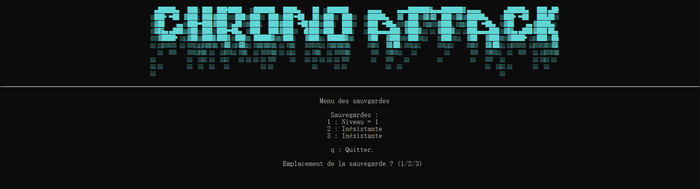
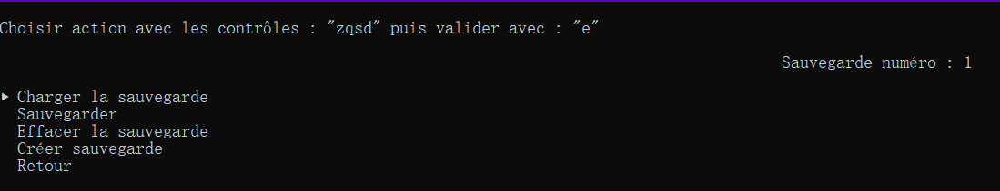
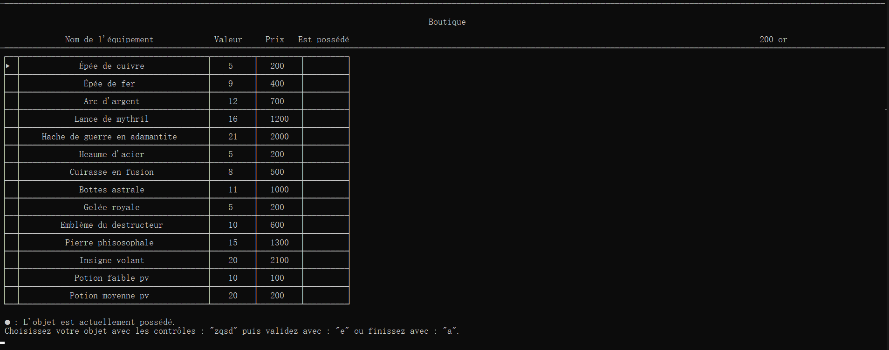
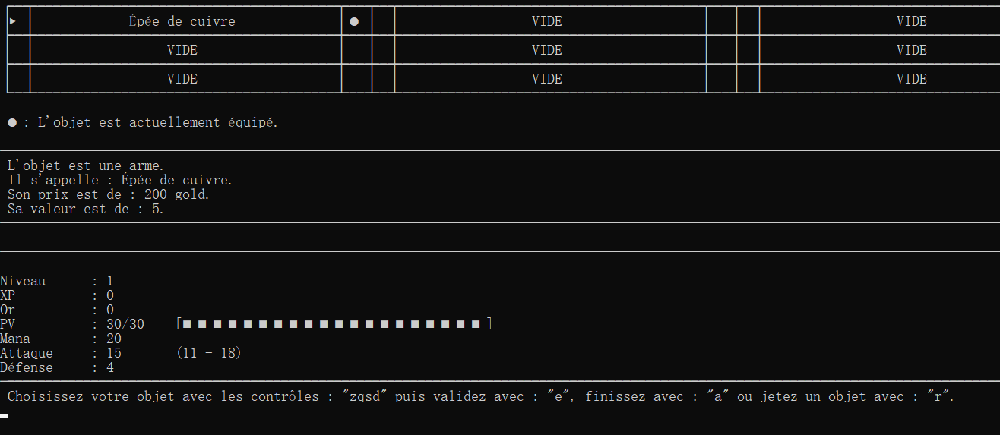

.
Voici ChronoAttack, qu'est ce que sait ? Un jeu développé dans un language de programmation hors-normes (littérament) crée par l'Université de Lille à Villeneuve-d'asqc pour nous apprendre les bases de la programmation, j'ai nommé "Ijava". Ce projet à était réalisé comme projet de fin du premier Semestre, par groupe de 2, dans le but de prouvé que nous avions acquis les bases de la programmation algorithmique. L'idée était de réalisé un programme qui était un jeu ludopédagogique comme seul restriction.
Alors c'est parti, voilà le speech : un jeu de combat où l'on enchaîne les combats sans arrêts en 1 contre 1 tour par tour. À la clé, des golds et de l'xp, les golds permettent d'acheter de l'équipement ( voir Boutique ) pour s'améliorer. Ce qui signifie pour moi création d'un système d'item (Ijava n'est pas un language de programmation orienté objets) en ce basant sur un csv et un système d'id d'object. Mais également la création d'un inventaire ( voir Inventaire ), système équiper/déséquiper, vérification des conditions d'équipement (desequipe automatiquement l'arme si une nouvelle et équipé) basé sur une première utilisation de l'enumeration.
D'un point de vue éducatif, ce projet ma permis de découvrir de nouvelle façon de faire, le travail en équipe pour faire fonctionner 2 style de code dans le même programme, prouver que je suis capable de mener un projet à bien. Et cette Saé (le projet) ma permis de développer mon premier "jeux vidéo" bien que j'ai conscience qu'un jeux vidéo ne ce code pas de cette manière dans plein de partie tels que l'ajout d'un gestionnaire de version, l'orienté object ou encore un language plus adaptée.
-> Menu Principale

-> Écran d'emplacement de sauvegarde
-> Menu sauvegarde
-> Boutique
-> Inventaire
